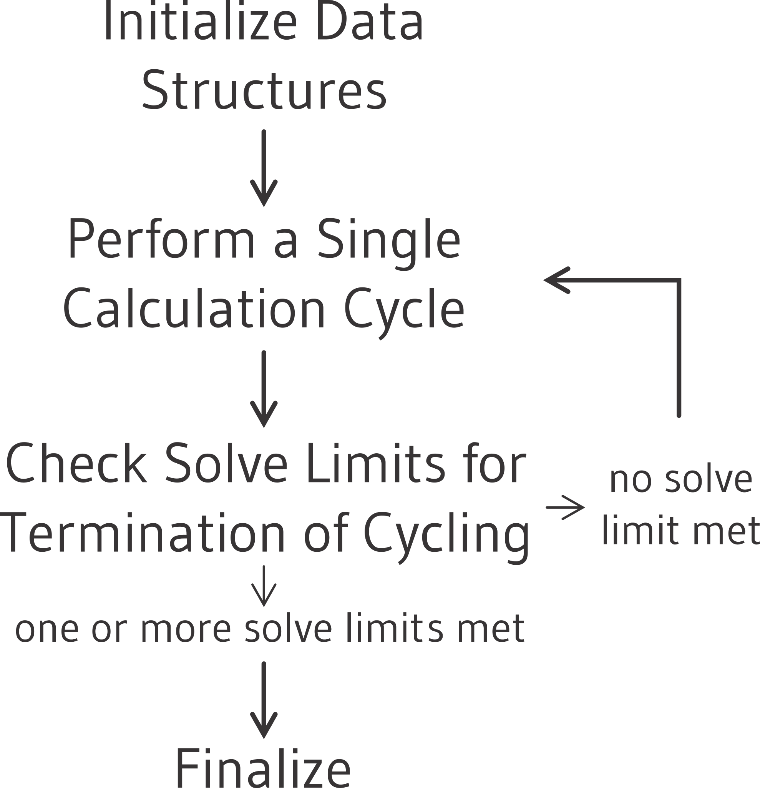

循环计算
引言
离散元（DEM）公式体系是对牛顿运动定律的一种显式、按时间步进求解的方法。模型状态通过执行一系列计算循环而在时间上向前推进。 每个循环由一系列称为 循环序列（cycle sequence） 的操作组成。本节阐述执行一系列循环的过程（包括循环序列的终止），以及 PFC 的循环序列。
执行一系列循环
在 PFC 中，通过调用 执行计算时步（model cycle） 或 求解模型（model solve） 命令来启动一系列循环。循环将持续进行，直到达到一个或多个 求解限制（solve limit）。
使用 执行计算时步（model cycle） 命令时，将创建一个单独的求解限制（对应指定的循环数），并检验其是否完成。另一方面，使用 求解模型（model solve） 命令时，可以同时指定多个求解限制。当至少满足一个求解限制时，循环即告终止。
PFC 中内置了若干求解限制（详情请参阅 求解模型（model solve） 文档）。此外，还可以将一个或多个 FISH 函数指定为求解限制，从而支持自定义的循环终止准则。
下图给出了执行一系列循环过程的示意图。

图 1：一系列循环的示意图。 单个计算循环持续进行，直到满足一个或多个求解限制。
在初始化阶段，会创建/删除接触，重置循环期间使用的变量， 并检查模型状态的有效性，以确认可以开始循环。例如， 若任何球颗粒或刚性簇的质量为 0，则无法进行循环，因为结果将是未定义的。 每个计算循环中都会执行一系列操作，称为循环序列（见 下文（below））。 计算循环完成后，会检查求解限制，若达到或超过一个或多个限制，则循环终止。若未达到 任何求解限制，则会执行更多的计算循环。在收尾阶段，会创建/删除接触， 并更新需要校验的数据结构，以确保在将交互式控制台 返回给用户以供进一步输入之前，模型状态是一致的。
请注意，可以从 编辑器窗格（The Editor Pane） 的工具栏中手动终止循环，也可以在循环过程中
按下 Shift+Esc 组合键来终止。若请求手动终止循环，则会先完成当前计算循环并执行收尾阶段，然后
将控制权返回给用户。
循环序列
每个计算循环中执行的操作序列称为循环序列。 循环序列由一组有序的操作组成，其中每个操作都被赋予一个浮点数，称为 循环点。下表列出了具体的操作 及其对应的循环点。
| 循环点 | 循环操作 |
|---|---|
| -10.0 | 校验数据结构（Validate data structures） |
| 0.0 | 确定时间步（Timestep determination） |
| 10.0 | 运动定律（或更新热体）（Law of motion (or update thermal bodies)） |
| 15.0 | 各过程之间的体耦合（Body coupling between processes） |
| 20.0 | 推进时间（Advance time） |
| 30.0 | 更新空间搜索数据结构（Update spatial searching data structures） |
| 35.0 | 创建/删除接触（Create/delete contacts） |
| 40.0 | 力-位移定律（或热接触更新）（Force-displacement law (or thermal contact update)） |
| 42.0 | 累积确定性量（Accumulate deterministic quantities） |
| 45.0 | 各过程之间的接触耦合（Contact coupling between processes） |
| 60.0 | 运动方程的第二遍计算（PFC 中不使用） |
| 70.0 | 热计算（PFC 中不使用） |
| 80.0 | 流体计算（PFC 中不使用） |
引入该系统是为了能够方便地向循环序列中添加其他操作。此外，循环点可以简单地标识循环序列中的操作，
从而可以借助 设置FISH回调命令（fish callback） 命令，按严格的顺序在循环期间的各个位置插入 FISH 回调以供执行。
无法在循环点恰好等于任何预定义循环点的位置安装回调。同样需要注意的是，
无法在循环点 40.0 与 42.0 之间安装回调，并且用户只能
通过回调在循环点 0.0 之前创建/销毁模型组件。这些约束是
必要的，可保护用户免于引入可能导致未定义行为的回调。例如，
若用户在确定时步之后创建球颗粒，则与该球颗粒新形成的
接触将不会用于确定稳定时步。由此产生的力和力矩
可能在下一个循环中导致系统失稳。
教程“使用 FISH 回调（Using FISH Callbacks）”演示了 FISH 回调的用法。
以下是对每个循环操作的说明。最后三个循环操作未在 PFC 中使用， 将不予讨论。这些循环点之所以存在，是因为其他 Itasca 程序中的运算顺序与 PFC 并不相同。PFC 不使用这些额外的操作。
- -10.0 - 验证数据结构（-10.0 - Validate Data Structures）
- 0.0 - 时间步确定（0.0 - Timestep Determination）
- 10.0 - 运动定律（10.0 - Law of Motion）
- 15.0 - 物体耦合（15.0 - Body Coupling）
- 20.0 - 推进时间（20.0 - Advance Time）
- 30.0 - 更新空间搜索数据结构（30.0 - Update Spatial Searching Data Structures）
- 35.0 - 创建/删除接触（35.0 - Create/delete Contacts）
- 40.0 - 力-位移定律（40.0 - Force-displacement Law）
- 42.0 - 累积确定性量（42.0 - Accumulate Deterministic Quantities）
- 45.0 - 接触耦合（45.0 - Contact Coupling）
– 下一节：能量与耗散机制（Next Section: Energy and Dissipation Mechanisms） –
| 这些内容对您有帮助吗？… 版权与免责声明 |
FLAC3D © 2019, Itasca | 原文更新于 2020 年 10 月 8 日 |